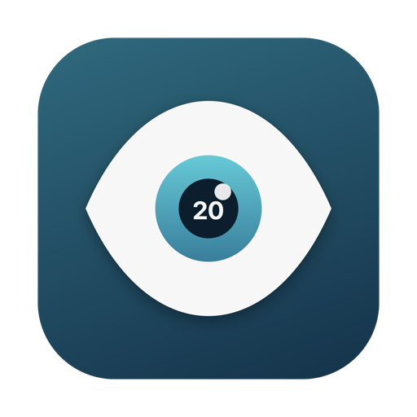

TwentyEyes
A 20-20-20 eye break reminder for Mac that knows when you're actually using it.
Download for Mac macOS 14 or later, Apple silicon. Free. About 1 MB.
Or install from Terminal in one line:
curl -fsSL https://bennyjiang.com/twentyeyes/install.sh | sh- Most break timers pause when you stop typing, so watching a video or sitting in a meeting doesn't count. TwentyEyes counts it. It watches keyboard and mouse, video playback, meetings, microphone and camera, and only reminds you after 20 minutes of real screen time.
- The reminder is a small card in the corner. It never takes over your screen or steals focus, and it stays until you dismiss it. In a meeting? Ignore it and do the 20 seconds right after.
- Step away for a couple of minutes and the timer resets on its own. That was your break.
- No permissions needed. No account, no network, no tracking.
Time to look away
20 minutes of screen time. Look at something ~20 feet away for 20 seconds.
If you downloaded the zip instead of using the installer:
- Unzip it and drag TwentyEyes to Applications.
- The app is not notarized with Apple, so the first launch is blocked. Open System Settings, go to Privacy & Security, scroll down and click Open Anyway. Alternatively run
xattr -dr com.apple.quarantine /Applications/TwentyEyes.app. - Click the eye icon in the menu bar to adjust the interval, see which signal counts you as active, or turn on Launch at login.